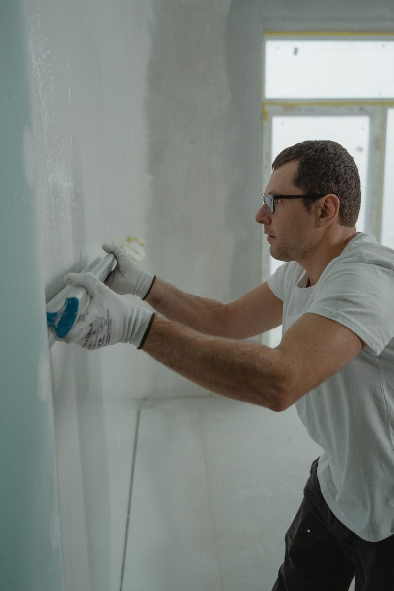

Ceiling, Roof Leak & Wet Drywall Repair in Plano, TX
A brown stain, bubbling paint or a sagging bulge in the ceiling means water is sitting above it. Blackland Restoration Co. provides ceiling water damage repair in Plano TX: safe drainage, wet drywall and insulation removal, drying, and a seamless finish that matches your existing texture. Call now and a crew is dispatched immediately.
- ✓ Sagging ceilings
- ✓ Roof & hail leaks
- ✓ Upstairs plumbing leaks
Call Now: 24/7 Ceiling Leak Help | Contact Us
Can a Ceiling Collapse From Water Damage?
Yes. Water-soaked drywall gets heavy and can collapse without warning. If your Plano ceiling is sagging, bubbling or dripping, move everyone out from under it and call for controlled drainage immediately.
Is Your Ceiling Sagging? Read This First
- Move people, pets and valuables out from under it
- Put a bucket and a tarp below the low point
- Turn off power to light fixtures in that ceiling at the breaker
- Don't poke it yourself unless water is about to break through on its own
- Call us so we can drain it in a controlled way
We create a small, controlled relief point to drain trapped water into containers, then assess what needs to be removed.
What's Causing the Water in Your Ceiling?
| Source | Where It Usually Shows Up |
|---|---|
| Upstairs bathroom or toilet leak | Ceiling of the room directly below the bathroom |
| Second-floor laundry overflow | Kitchen or living room ceiling |
| Attic water heater or AC unit | Hallway ceilings, near the attic access |
| Roof leak or hail damage | Top-floor bedrooms, closets, near chimneys and vents |
| Burst attic pipe | Anywhere under the plumbing run |
North Texas gets frequent hail and strong spring storms, so roof leak water damage cleanup in Plano is a regular call, along with interior plumbing leaks.
Can Wet Drywall Be Dried, or Does It Need Replacing?
It depends on three things: how wet it got, what kind of water it was, and whether the drywall still has its strength.
Usually dried in place
- Clean water, caught quickly
- Drywall that's damp but still firm
- No sagging, no crumbling, no swelling at the seams
Usually removed and replaced
- Ceilings that sagged or bowed
- Drywall that's soft, crumbling or delaminating
- Contaminated water (sewage, floodwater, or water that sat for days)
- Drywall with visible mold growth
Paper-faced drywall is a food source for mold, so wet drywall removal and drying in Plano is often about preventing mold more than fixing the stain.
Our Ceiling & Drywall Restoration Process
Controlled Drainage
We drain trapped water so the ceiling doesn't collapse on its own.
Thermal Imaging to Trace the Water
Water travels along joists and down wall cavities. Infrared cameras and moisture meters show where it went beyond the visible stain.
Remove Wet Ceiling Drywall and Insulation
Damaged sections are cut out cleanly. Wet blown-in insulation in the attic above is vacuumed out so the ceiling cavity can dry.
Dry the Cavity and Framing
Air movers and dehumidifiers dry the joists, top plates and remaining drywall, with readings taken daily.
Rebuild and Finish
New drywall is hung, taped, bedded and textured to match, then primed and painted.
Water Dripping Through Recessed Lights or Smoke Detectors. Water often finds the holes in your ceiling first, which means light fixtures and smoke detectors. Turn off the breaker for that circuit right away. Water and electrical fixtures are a dangerous mix. We'll dry the area and you should have an electrician check fixtures that got wet.
Matching Plano Ceiling and Wall Textures
Nobody wants a patch that stands out. Most Plano homes have one of a few common textures:
- Orange peel on many walls
- Knockdown on ceilings and walls in many 1980s to 2000s homes
- Smooth or hand-troweled finishes in many custom West Plano homes
- Popcorn (acoustic) in some older homes, which may need testing before removal if the home was built before the 1980s
We match texture and paint so the repair blends in.
Hail Storm Roof Leak Soaked a Bedroom Ceiling
If storm damage let water in, we can tarp the roof to stop more water entering, then dry the attic and ceiling. Your roofer handles the permanent roof repair, and we take care of the interior damage.

Ceiling Water Damage FAQs
What does a brown water ring and bubbling paint on my ceiling mean? +
Water has been sitting in or on top of the drywall. Even if it's dried on the surface, there may be wet insulation or framing above it. A moisture check tells you for sure.
Can I just paint over a ceiling water stain? +
Only after the leak is fixed and the ceiling is confirmed dry. Painting over wet drywall traps moisture and the stain usually comes back.
Do you remove wet blown-in insulation in the attic? +
Yes. Soaked blown-in insulation is vacuumed out and replaced after the attic is dry.
How long does ceiling water damage repair take? +
Drying takes about three to five days. Drywall, texture and paint usually take a few more days after that.
Water in Your Ceiling? Call Now Before It Comes Down
A wet ceiling won't fix itself. Call Blackland Restoration Co. now and a crew will be dispatched immediately to drain, dry and repair it the right way.
Water in Your Plano Home Right Now?
Every hour matters with water damage. Call now, talk to a real person, and we'll dispatch a crew immediately to stop the water, start drying, and protect your home and your claim.
☎ Call (214) 833-4785Don't Wait on Water Damage
- ✓ Live answer 24/7, every day of the year
- ✓ Crew dispatched immediately
- ✓ On-site assessment
- ✓ Insurance-ready documentation